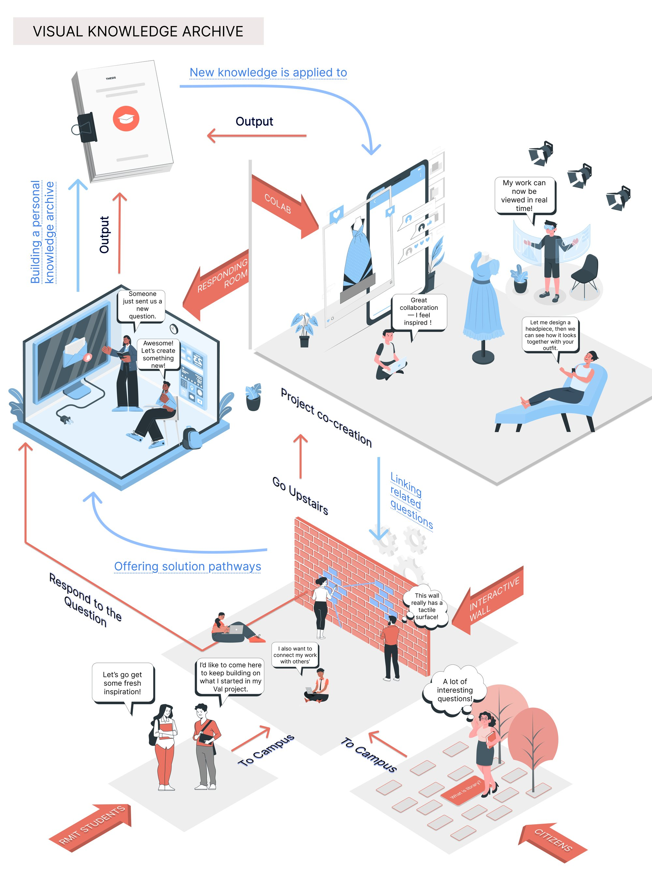
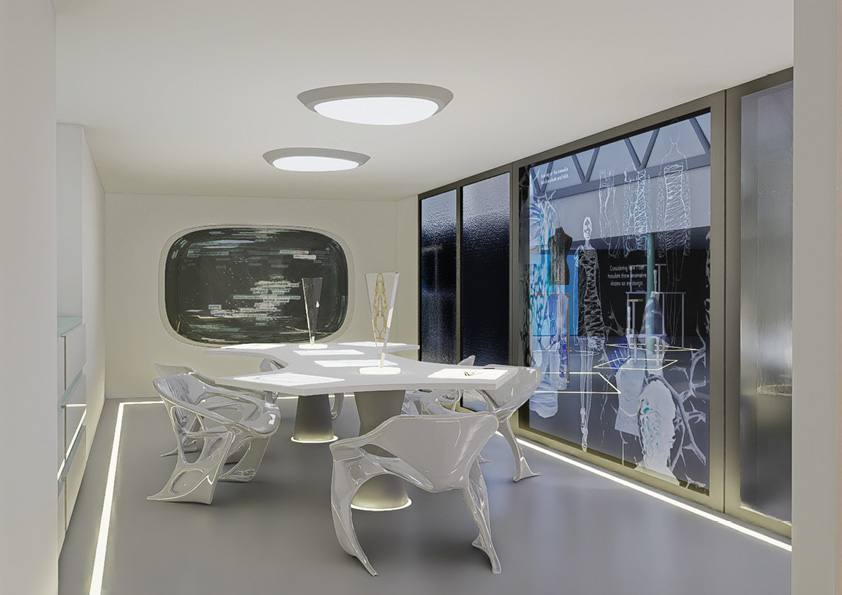
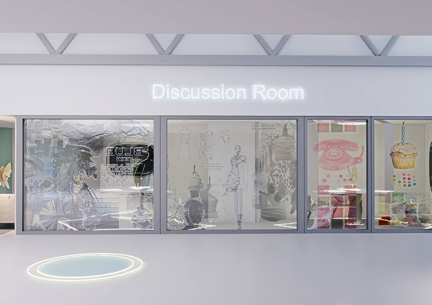
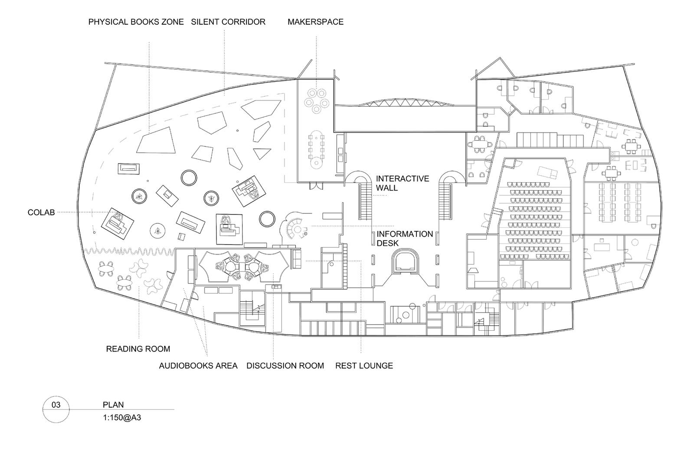
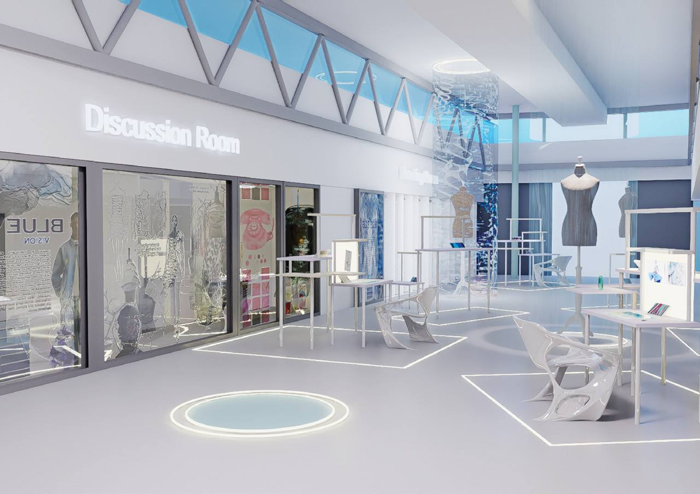
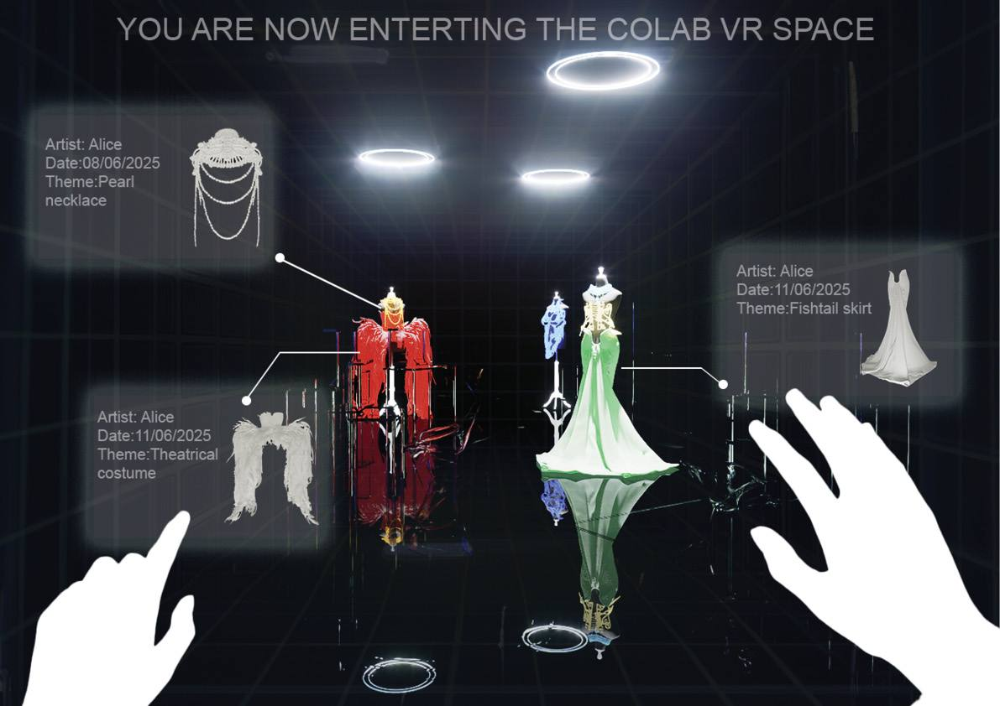
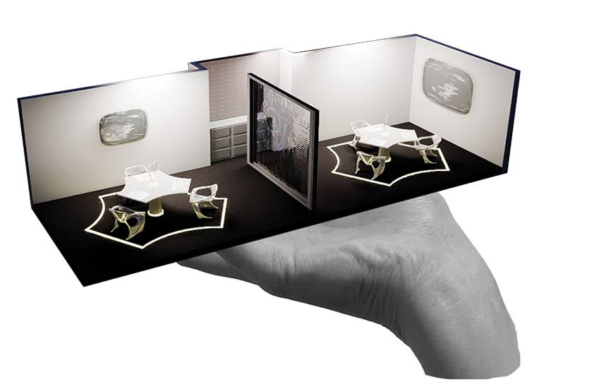
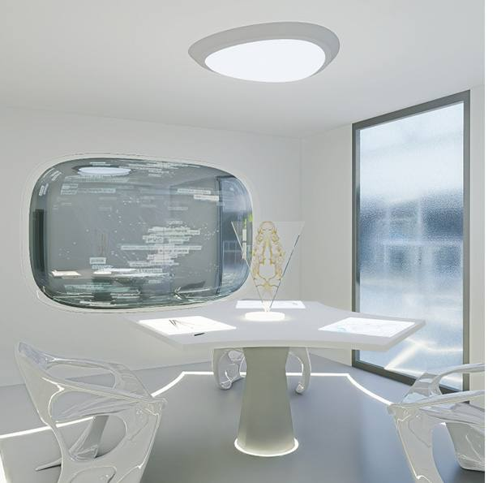
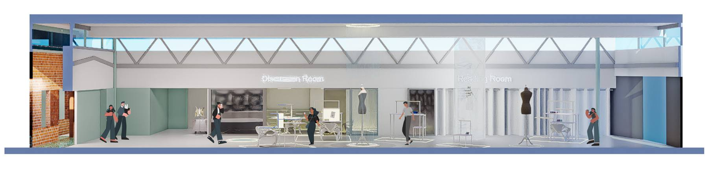

Project 06 — Future Library · RMIT CoLab
Speculation
Knowledge circulation in a future library
Invite — Input — Transfer — Output as Input
Phase 01 — Invite
A platform for transformation
This project reimagines the future library as a platform for immersive, interactive, and collaborative knowledge transformation. Aimed at RMIT Fashion and Textiles students, the design unfolds through four phases: Invite, Input, Transfer, and Output as Input.
In the CoLab zone, users co-style virtual garments on shared mannequins, turning individual insight into collective creativity. A responsive discussion room supports reflection and archiving. Together, these elements form a regenerative loop — where input becomes output and output sparks new inquiry — making the library an evolving ecosystem of curiosity and imagination.


Phase 02 — Input
Respond to a keyword
Here, you can respond to a keyword previously illuminated by the Interactive Wall. This keyword might be a question, a theme, or a material — serving as a creative anchor.
Your response, once uploaded, contributes to a growing Visual Knowledge Archive.

Phase 03 — Transfer
The discussion room
This is a flexible space. When separated, it suits small group discussion. When merged, the walls transform into information displays.
Furniture in this area supports multiple postures — standing, sitting, squatting — making the body part of the thinking process. Each desk contains a drawing board, and once uploaded, your work is visualized in real time on a VR mannequin. You can co-style a design with nearby users — creating collaboratively on different mannequins.





Phase 04 — Output as Input
The loop closes
Every response, once uploaded, contributes to a growing Visual Knowledge Archive — and the archive itself becomes the next invitation. Input becomes output, and output sparks new inquiry.